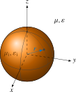
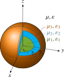
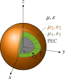
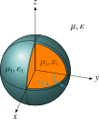

Spheres
In all of the following setups the sphere is embedded in a homogeneous background medium with permeability $\mu$ and permittivity $\varepsilon$. This medium is defined only by the chosen excitation as a Medium(ε, μ).
PEC/PMC Sphere
The perfectly electrically conducting (PEC) or perfectly magnetically conducting (PMC) sphere has radius $r$ and is assumed to be located in the origin. It is defined by PECSphere.

API
SphericalScattering.PECSphere — Type
PECSphere(
radius = error("missing argument `radius`"),
)Constructor for the PEC sphere, that is, for a Sphere with the boundary condition PEC.
PECSphere is an alias of Sphere{PEC}, so that it can be dispatched on as well.
PECSphere is an alias of Sphere{PEC}: a sphere carrying the boundary condition PEC as its type parameter, see Scatterer.
Dielectric Sphere
The dielectric sphere has radius $r$ and is assumed to be located in the origin. It is defined by DielectricSphere, where the filling Medium(εᵢ, μᵢ) with permeability $\mu_\mathrm{i}$ and permittivity $\varepsilon_\mathrm{i}$ has to be defined.

API
SphericalScattering.DielectricSphere — Type
DielectricSphere(
radius = error("missing argument `radius`"),
filling = error("missing argument `filling`")
)Constructor for the dielectric sphere, that is, for a Sphere with the boundary condition Dielectric.
DielectricSphere is an alias of Sphere{<:Dielectric}, so that it can be dispatched on as well.
Here radius is a Float and filling is of type Medium(εᵢ, μᵢ).
DielectricSphere is an alias of Sphere{<:Dielectric}: the filling is carried by the boundary condition Dielectric, which, in contrast to PEC, requires data and is therefore stored as a value as well, sp.boundary.filling.
Layered Dielectric Sphere
The layered dielectric sphere has radii $[r_1, r_2, \dots, r_N]$ and is assumed to be located in the origin. It is defined by LayeredSphere, where the vector of fillings [Medium(ε₁, μ₁), Medium(ε₂, μ₂), ..., Medium(εN, μN)] with permeability $\mu_n$ and permittivity $\varepsilon_n$ has to be defined.

API
SphericalScattering.LayeredSphere — Type
LayeredSphere(
radii = error("Missing argument `radii`"),
filling = error("`missing argument `filling`")
)Constructor for the layered dielectric sphere.
LayeredSphere is an alias of Sphere{<:Layered{<:Dielectric}}, so that it can be dispatched on as well: the outermost of the radii is the radius of the sphere, and the innermost filling that of its dielectric core, see Layered.
with, e.g., radii = SVector(0.25, 0.5, 1.0) and filling = SVector(Medium(ε1, μ1), Medium(ε2, μ2), Medium(ε3, μ3)).
LayeredSphere is an alias of Sphere{<:Layered{<:Dielectric}}. Seen from outside, the shells form a condition on the outer surface: the outermost radius $r_N$ is the radius of the Sphere, while the inner interfaces, the fillings of the shells, and the dielectric core are carried by the boundary condition Layered.
Layered Dielectric Sphere with PEC Core
The layered dielectric sphere has radii $[r_1, r_2, \dots, r_{N+1}]$ and is assumed to be located in the origin. It is defined by LayeredSpherePEC, where the vector of fillings [Medium(ε₁, μ₁), Medium(ε₂, μ₂), ..., Medium(εN, μN)] with permeability $\mu_n$ and permittivity $\varepsilon_n$ has to be defined.

API
SphericalScattering.LayeredSpherePEC — Type
LayeredSpherePEC(
radii = error("Missing argument `radii`"),
filling = error("Missing argument `filling`")
)Constructor for the layered dielectric sphere with a PEC core.
LayeredSpherePEC is an alias of Sphere{<:Layered{PEC}}, so that it can be dispatched on as well: the outermost of the radii is the radius of the sphere, and the innermost one that of its PEC core, see Layered.
with, e.g., radii = SVector(0.25, 0.5, 1.0) and filling = SVector(Medium(ε1, μ1), Medium(ε2, μ2)).
LayeredSpherePEC is an alias of Sphere{<:Layered{PEC}}: as for the LayeredSphere, the outermost radius is that of the sphere, and the condition Layered carries the rest, here with a PEC core.
Dielectric Sphere with Thin Impedance Layer
The dielectric sphere with a thin impedance layer of thickness $t$ has radius $r$ and is assumed to be located in the origin. It is defined by DielectricSphereThinImpedanceLayer. Unlike the LayeredSphere model, the solution is obtained by using an approximation: it is assumed that the impedance is so high that the displacement field is purely radial (see [Jon95, pp. 230ff]). This leads to a potential drop across the thin layer, while the displacement field is constant in radial direction. In addition to the filling Medium(εᵢ, μᵢ), the impedance layer must be specified, both the Medium(εₜ, μₜ) and its thickness.

This configuration is (at least so far) only intended for the uniform static field excitation.
API
SphericalScattering.DielectricSphereThinImpedanceLayer — Type
DielectricSphereThinImpedanceLayer(
radius = error("missing argument `radius`"),
thickness = error("missing argument `thickness` of the coating"),
thinlayer = error("missing argument `thinlayer`"),
filling = error("missing argument `filling`")
)Constructor for the dielectric sphere with a thin impedance layer. For this model, it is assumed that the displacement field is only radial direction in the layer, which requires a small thickness and low conductivity. For details, see for example T. B. Jones, Ed., “Models for layered spherical particles,” in Electromechanics of Particles, Cambridge: Cambridge University Press, 1995, pp. 227–235. doi: 10.1017/CBO9780511574498.012.
DielectricSphereThinImpedanceLayer is an alias of Sphere{<:ThinImpedanceLayer}, so that it can be dispatched on as well, see ThinImpedanceLayer.
Here radius and thickness are a Floats, filling and thinlayer are of type Medium.
DielectricSphereThinImpedanceLayer is an alias of Sphere{<:ThinImpedanceLayer}: the coating, being thin, is modelled as an effective condition on the surface of the sphere, see ThinImpedanceLayer, which carries the thickness, the thinlayer, and the filling.